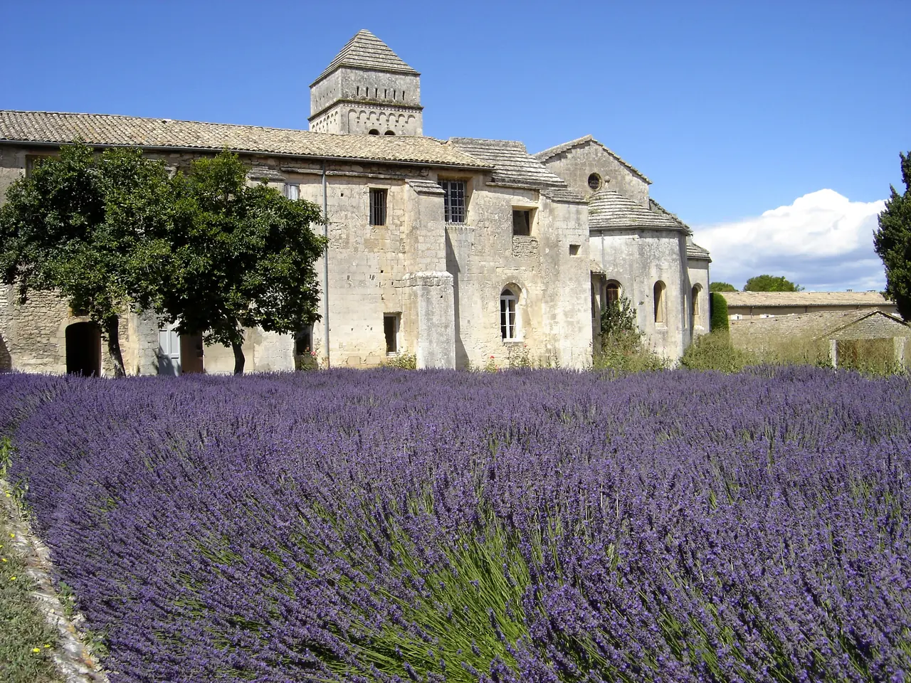
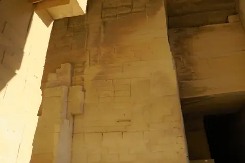
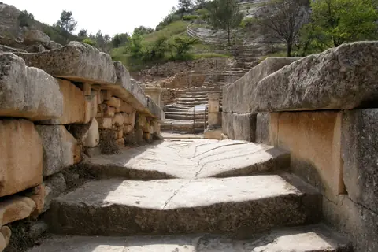
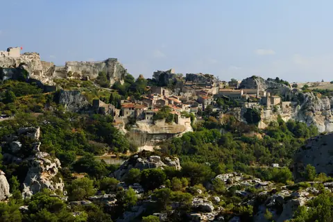
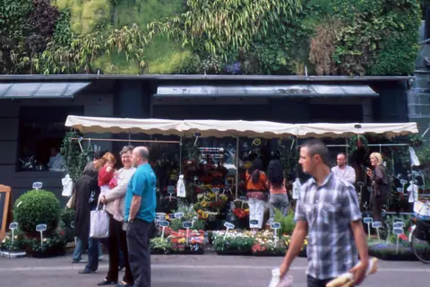
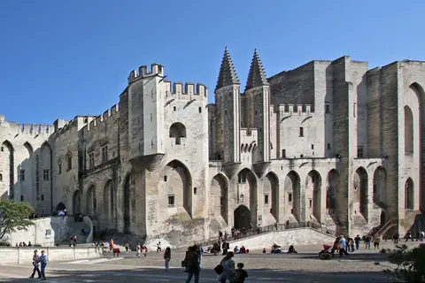
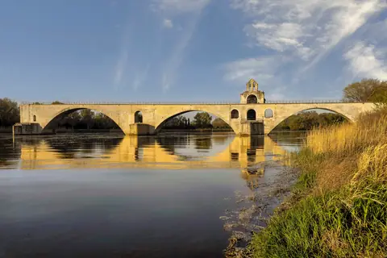

{kind=link}
관광·미술관
Nous avons déjà des billets.
이미 표가 있습니다.
누 자봉 데자 데 비예

생레미 남쪽 알피유 산자락, 고대 로마 영묘(Mausolée) 바로 옆에 위치한 11세기 로마네스크 수도원이자 빈센트 반 고흐의 가장 위대한 예술적 치유 공간이다.
1889년 5월 아를에서 자신의 왼쪽 귀를 자르는 비극을 겪은 고흐는 정신 발작의 고통 속에서 이곳 정신요양원에 자진 입원했다.
1890년 5월 오베르-쉬르-우아즈로 떠나기까지 꼬박 1년간 머물며, 쇠창살 너머로 바라본 새벽 하늘에서 영감을 얻은 『별이 빛나는 밤(The Starry Night)』, 수도원 정원의 『붓꽃(Irises)』, 『사이프러스가 있는 밀밭』, 『올리브 나무 숲』 등 143점의 유화와 100여 점의 소묘를 쏟아냈다.
"고흐가 극한의 정신적 고통 속에서도 붓을 꺾지 않고 프로방스의 하늘과 자연을 통해 영혼을 구원하고자 했던 처절한 예술혼의 현장이다." 11세기 아름다운 로마네스크 사각형 회랑을 거닐고, 2층의 고흐 병실 창문 너머로 밀밭과 사이프러스 나무를 바라본 뒤 뒷마당 라벤더 밭을 산책하는 60~75분 여정이 깊은 감동을 준다.
| 운영시간 | 여름 시즌(2026-04-05~) 09:30~19:00, 마지막 입장 18:15 |
|---|---|
| 휴무 | 연중무휴 (주 7일 개방) |
| 예약 | 공식 페이지에 예약 관련 안내 없음 — 미확인 재확인 |
성 바오로에게 헌정된 수도원으로, 사각형 중정을 둘러싼 반원형 아치와 쌍둥이 기둥머리에 새겨진 식물 문양 조각이 완벽한 고요함을 선사한다. 현재도 미술치료 요양 시설로 일부 활용되고 있다.
| 항목 | 상세 정보 |
|---|---|
| 위치 | Chemin Saint-Paul, 13210 Saint-Rémy-de-Provence |
| 운영 시간 | 매일 09:30–18:30 (입장 마감 17:45) / 연중무휴 (동절기 일부 단축) |
| 입장료 | 일반 성인 €7.00, 학생 €5.50, 12세 미만 무료 (현장 매표) |
| 주차장 | 수도원 정문 앞 무료 전용 주차장 완비 |
| 연계 동선 | 도로 건너편 도보 3분 거리에 Glanum 로마 유적지 및 Les Antiques(개선문/영묘) 위치 |
Nous avons déjà des billets.
이미 표가 있습니다.
누 자봉 데자 데 비예
On peut prendre des photos ?
사진 찍어도 되나요?
옹 푀 프랑드르 데 포토
Où commence la visite ?
관람은 어디서 시작하나요?
우 코망스 라 비지트

높이 15m 거대한 지하 백색 석회암 채석장 동굴 전체를 디지털 캔버스로 변모시킨 세계 최초·최대 규모의 몰입형 미디어 아트 공간. 7,000㎡ 암벽과 바닥을 감싸는 빛과 음악의 향연.

기원전 6세기 켈트 성소에서 헬레니즘 도시를 거쳐 로마 제국의 온천 휴양도시로 번영했던 거대한 고대 발굴 유적지. 갈리아에서 가장 완벽하게 보존된 기원전 1세기 로마 영묘와 개선문 '레 장티크(Les Antiques)'.

알피유(Alpilles) 산맥 해발 245m 석회암 절벽 위에 우뚝 솟은 중세 독수리 요새 마을. 자연 암반과 성벽이 하나로 결합된 레보 성채(Château des Baux) 폐허와 올리브 계곡 대파노라마.

세계적인 식물학자 파트리크 블랑의 300㎡ 거대한 수직 정원(Mur Végétal) 외벽 아래 40여 개 프로방스 전통 식재료 좌판이 모인 아비뇽의 활기찬 실내 중앙 미식 시장.

14세기 가톨릭 교황청이 로마를 떠나 68년간 머물렀던 서유럽 최대의 중세 고딕 요새 궁전. 베네딕토 12세의 구궁전과 클레멘스 6세의 신궁전, 마테오 조바네티의 프레스코화와 히스토패드 3D 증강현실 복원.

12세기 론(Rhône) 강을 건너 교황령 아비뇽과 프랑스 왕국을 잇던 920m의 유일한 석조 다리. 소빙하기의 거센 홍수로 22개 아치 중 4개와 2층 생니콜라 예배당만 남은 유네스코 세계유산.